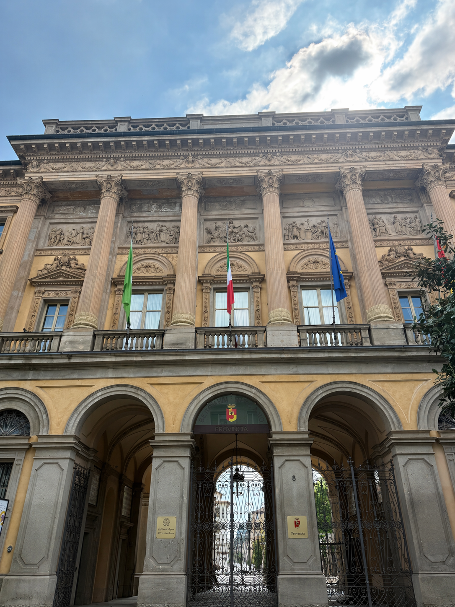
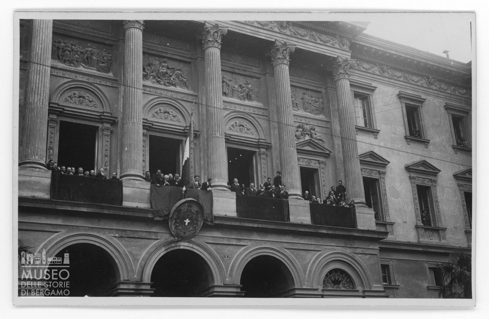

Contesto storico
Ci troviamo davanti al Palazzo della Prefettura, in via Torquato Tasso 8, durante il Ventennio fascista era la sede della massima autorità locale dello Stato. Il Prefetto rappresentava il Governo centrale ed esercitava un forte controllo politico e amministrativo sul territorio.
Durante la Repubblica Sociale Italiana la carica prefettizia venne trasformata in quella di Capo della Provincia, rafforzando ulteriormente il ruolo repressivo del regime a livello locale.
🎧 Audio Lettura
Perché è un luogo della memoria
Questo edificio è legato a momenti centrali della Resistenza bergamasca e della Liberazione. L’8 settembre 1943, alla vigilia dell’occupazione tedesca, Ettore Tulli organizzò qui un’azione per recuperare armi, dando origine al primo arsenale della banda partigiana “Pisacane”.
Il 26 aprile 1945 la Prefettura fu il primo edificio liberato dai partigiani. Il Comitato di Liberazione Nazionale designò Ezio Zambianchi Prefetto della Liberazione, segnando il passaggio dal potere fascista a quello democratico.
«La Costituzione non è una macchina che una volta messa in moto va avanti da sé: ha bisogno ogni giorno dell’impegno e della responsabilità dei cittadini».
Piero Calamandrei🎧 Audio Lettura
Contenuti multimediali


Approfondimento – Ettore Tulli e la banda “Carlo Pisacane”
Ettore Tulli fu una delle figure centrali della prima Resistenza armata bergamasca dopo l’8 settembre 1943. Proveniente da una famiglia antifascista, Tulli maturò precocemente una posizione di netta opposizione al regime, che lo portò a impegnarsi attivamente nella lotta contro il fascismo e l’occupazione tedesca.
Subito dopo l’armistizio, Tulli fu tra i protagonisti dell’azione condotta presso la Prefettura di Bergamo, dove tentò di recuperare armi per evitare che cadessero nelle mani dei tedeschi e dei fascisti repubblichini. Da questa iniziativa nacque uno dei primi arsenali partigiani della città, elemento fondamentale per l’avvio della Resistenza organizzata.
Nel corso dell’autunno 1943 Tulli contribuì alla formazione della banda partigiana “Carlo Pisacane”, attiva inizialmente tra Bergamo e la Val Brembana, in particolare nelle zone di Santa Brigida ed Erna. La scelta del nome “Pisacane” richiamava esplicitamente i valori del Risorgimento e il sacrificio per la libertà, sottolineando il legame ideale tra la lotta partigiana e le battaglie per l’unità e l’indipendenza nazionale.
La banda Pisacane operò in una fase ancora iniziale e difficile della Resistenza, caratterizzata da scarsità di armi, organizzazione precaria e forte repressione da parte delle autorità fasciste. Proprio per questo motivo, il ruolo di Tulli e dei suoi compagni assume un valore particolarmente significativo: essi rappresentarono uno dei primi nuclei di opposizione armata sul territorio bergamasco, anticipando forme di lotta che si sarebbero poi strutturate nei mesi successivi.
🎧 Audio Lettura
Fonti
Fonti bibliografiche
- Mario Pelliccioli, Itinerari di memoria. Un percorso a Bergamo tra fascismo, occupazione tedesca e Resistenza, Moltefedi Achille Grandi Editore, Bergamo 2023
- Giuseppe Gaudenzi, Ettore Tulli e la banda Pisacane, Il filo di Arianna, Bergamo, 2002
- Approfondimento: La banda pisacane , Associazione Culturale Banlieue
Fonti multimediali
- Immagine 1: Archivio fotografico del progetto, classe 5IG Itis P. Paleocapa
- Immagine 2: GI DI ENNE, autorità sul balcone della prefettura, raccolta Domenico Lucchetti, fondo famiglia Giovannelli De Noris, Archivio Museo delle Storie di Bergamo